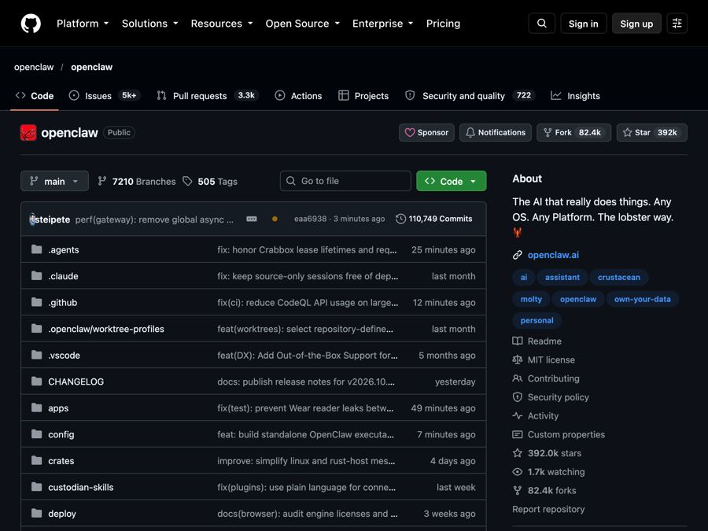

OpenClaw: your own free AI assistant inside WhatsApp and Slack
OpenClaw is a free, open-source AI assistant that runs on your own computer and chats with you in WhatsApp, Telegram, Slack, and more.

The problem it solves
You probably use a few AI chat apps already. One in a browser tab, one on your phone, maybe one at work. Each one lives in its own little box. You copy text in, you copy answers out. And most of them can only talk. They cannot actually do much for you.
Meanwhile, you spend all day in the same few places. WhatsApp. Slack. Telegram. iMessage. What if your AI helper just lived there, like another contact you can text?
That is the idea behind OpenClaw.
What it is
OpenClaw is an open-source AI assistant. Open source means the code is public and free for anyone to use or check. It runs on your own computer and meets you in the chat apps you already use.
The README lists Discord, iMessage, Slack, Microsoft Teams, Telegram, WhatsApp, and more than 20 others, including Google Chat and Signal. There are also apps for Mac, iPhone, Android, Windows, and Linux.
The key part is a piece called the Gateway. Think of it as the assistant's home base on your computer. It keeps track of your chats, its tools, and its connections to each app.
OpenClaw does not include its own AI brain. You plug one in. The README names options like Claude, Codex, or local models (AI that runs fully on your own computer). You can swap them later without changing anything else.
Who it's for
- Busy people who want an assistant they can simply text.
- Small business owners who live in WhatsApp or Slack all day.
- Teams that want one shared assistant. The README says the same setup can run for one person on a laptop or for a whole team.
- People who care about privacy and want their data on their own machine.
- Tech-curious folks happy to spend some time on setup.
What you can do with it
- Chat from your usual apps. Message your assistant in WhatsApp, Telegram, Slack, Discord, iMessage, Signal, and many more.
- Keep your data at home. Its memory, settings, and logins live on your own hardware, not on OpenClaw's servers.
- Pick your AI. Use a hosted AI service or a local model, and switch whenever you like.
- Add skills. Tools, skills, and plugins (add-ons) give it new abilities. You can find shared ones on ClawHub.
- Use extra device features. On supported devices, companion apps add voice, camera, screen, and on-device actions.
- Control it from a dashboard. A web page called the Control UI lets you see and message your assistant.
- Stay safe with strangers. If someone unknown messages it, it asks you to approve them first.
How to start, step by step
You need a Mac, Windows, or Linux computer and an account with an AI provider (or a local model). On a Mac you will use Terminal, the built-in app for typing commands. On Windows you use PowerShell.
- Open Terminal and paste this one line. It installs OpenClaw and anything it needs.
curl -fsSL https://openclaw.ai/install.sh | bash
On Windows, open PowerShell and paste this instead:
iwr -useb https://openclaw.ai/install.ps1 | iex
- A setup wizard opens on its own. Follow it. It checks that your AI account works, creates a workspace, and sets up the Gateway.
- Open the dashboard with the command
openclaw dashboard. Send a message there to check the assistant is working. - Connect a chat app like WhatsApp or Telegram. The official getting started guide at docs.openclaw.ai walks you through each one.
- Send your assistant a message from your phone.
Good to know
- OpenClaw is free. The README says there is no paid tier, no hosted service, and no token (no crypto coin).
- The AI may cost money. OpenClaw itself is free, but the AI service you plug in may charge you. A local model avoids that, but needs a capable computer.
- Privacy. Your messages go to the AI provider and chat apps you choose. OpenClaw itself only does a daily version check by default. Anonymous usage stats are off unless you turn them on, and you can turn off the version check too.
- Be careful with what it can do. The README warns that its tools run directly on your computer unless you set up a sandbox (a walled-off safe space). Treat messages from others as untrusted. Read the security guide before letting other people use it.
- Setup takes effort. This is more hands-on than downloading a phone app.
- Who runs it. It is run by the OpenClaw Foundation, an independent nonprofit. Donors include Amazon, OpenAI, and Red Hat, but the README says none of them own or direct it.
- License: MIT. You are free to use it, change it, and even use it in a business. Just keep the copyright notice.
The bottom line
OpenClaw turns the chat apps you already use into a doorway to your own AI assistant. It runs on your computer, keeps your data with you, and costs nothing beyond the AI service you pick. Plan for some setup time, and read the safety notes before you give it real power.
Get it: github.com/openclaw/openclaw
📲 Watch the 30-second video on Instagram
Keep reading

DBX: one small free app to open and edit 100+ kinds of databases
DBX is a free, tiny app that lets you browse, search and edit over 100 kinds of databases, with an AI helper that writes queries for you.

PureMac: free up space on your Mac without a subscription
PureMac is a free, open-source Mac cleaner that removes junk, fully uninstalls apps, and never tracks you or tries to scare you.

Strata: run a big, private AI chatbot on your own gaming PC
A free one-click installer that runs a large Qwen AI model on a normal gaming PC, so your chats never leave your computer.